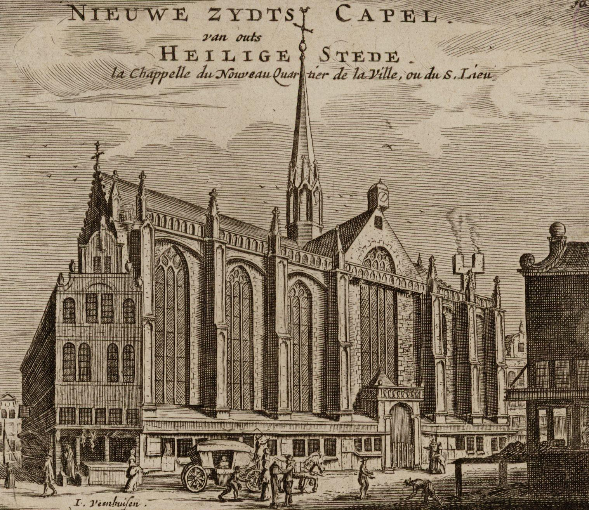
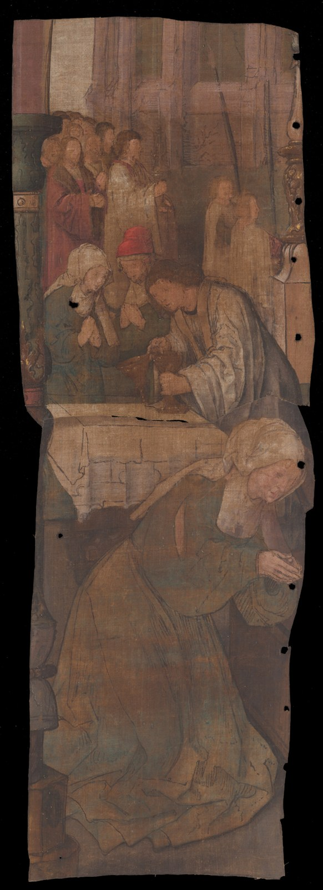
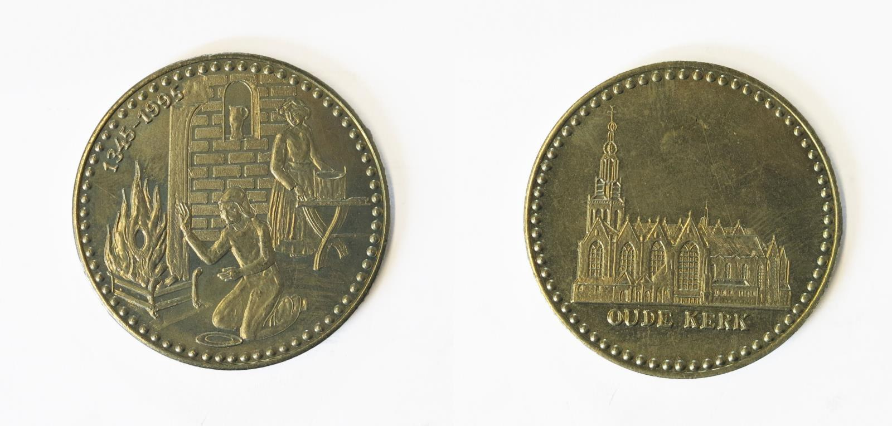
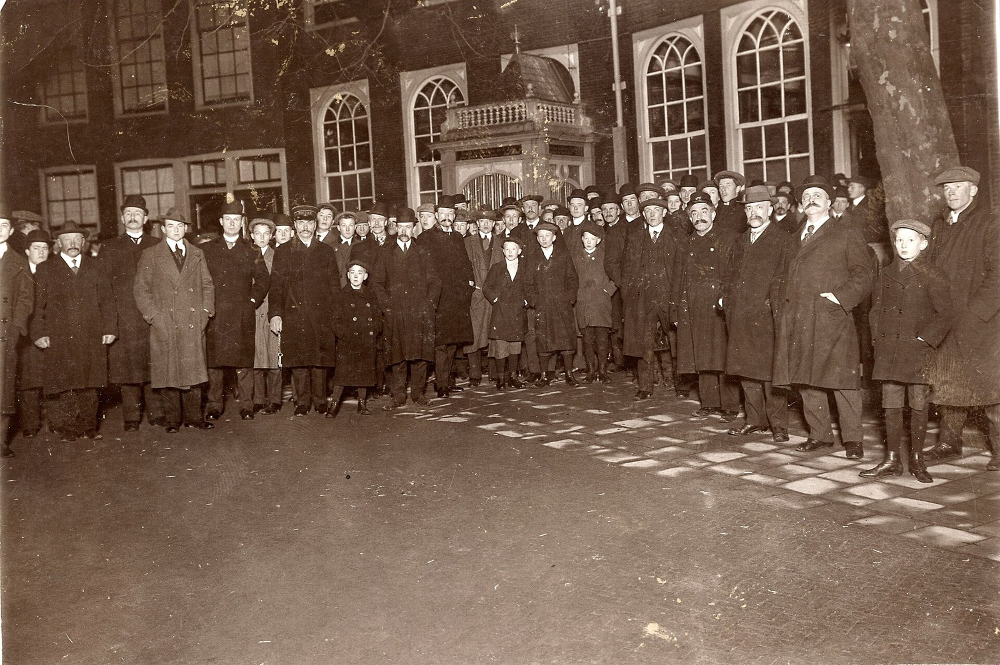
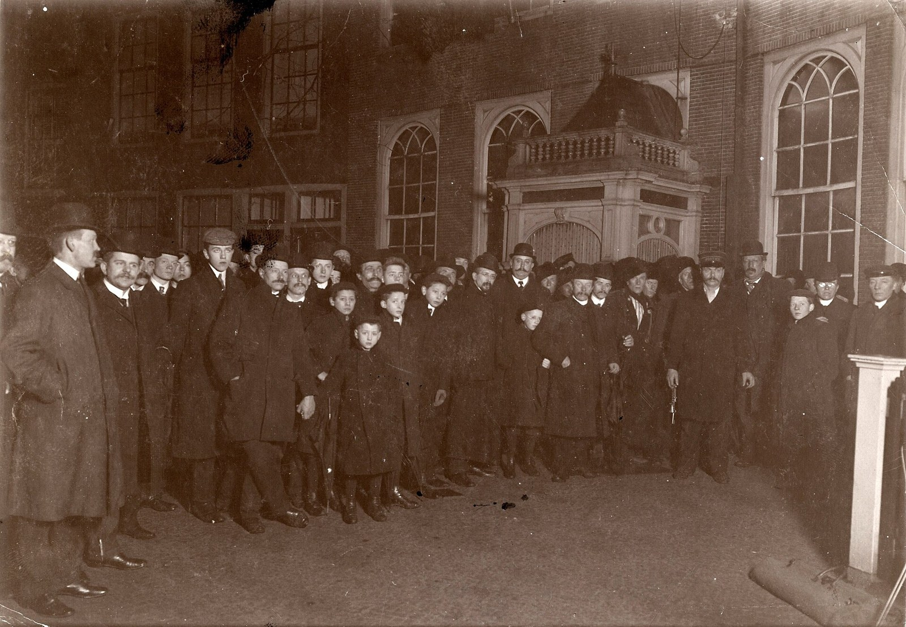

Jan Veenhuysen (engraver) · Wikimedia Commons · Public domainA hóstia que não queimou: Amsterdã, 1345
Reconhecido pela Santa Igreja CatólicaO RELATO
O FATO
Na noite de 15 de março de 1345, segundo a tradição, um homem jazia gravemente doente numa casa da Kalverstraat, em Amsterdã. Chamou um sacerdote para receber os últimos sacramentos, inclusive a comunhão. Logo depois vomitou. Como era costume, o vômito foi lançado ao fogo da lareira.
Na manhã seguinte, a hóstia foi encontrada intacta entre as cinzas. O sacerdote a guardou numa caixa e a levou à igreja paroquial, hoje a Oude Kerk. Por duas vezes, a hóstia reapareceu na casa da Kalverstraat. A notícia correu a cidade.
A INVESTIGAÇÃO
Em 1346, o bispo auxiliar de Utrecht, Nythardus, concedeu por carta quarenta dias de indulgência aos que visitassem o lugar. Um mês depois, o bispo de Utrecht, Jan van Arkel, escreveu ao clero da cidade sobre o Corpo do Senhor e autorizou procissões e a exposição pública do milagre.
A casa virou capela: a Heilige Stede, o Lugar Santo, de 1347. Em 1452, um incêndio destruiu Amsterdã e a capela; a relíquia foi preservada. A cidade tornou-se centro de peregrinação, e a procissão anual do Milagre, a maior festa de Amsterdã.
A PROCISSÃO HOJE
Em 1578, a cidade passou ao protestantismo. A capela foi entregue ao culto reformado e a procissão, proibida. A hóstia desapareceu: seu paradeiro é desconhecido. Um pequeno grupo guardou a memória na igreja clandestina do Begijnhof, e fiéis isolados caminharam pela antiga rota.
Em 1881, um grupo de leigos retomou o percurso em silêncio: a Stille Omgang. A capela foi demolida em 1908, sob protestos. Hoje, na noite de sábado da Semana do Milagre, milhares de peregrinos de todo o país percorrem a rota entre a meia-noite e as quatro da manhã, sem cantos nem orações em voz alta.
O QUE A SANTA IGREJA CATÓLICA DECIDIU
O culto do Milagre de Amsterdã foi autorizado em 1346 pela Santa Igreja Católica: carta de indulgência do bispo auxiliar de Utrecht, Nythardus, e carta do bispo de Utrecht, Jan van Arkel, permitindo procissões e a exposição pública do milagre. A procissão silenciosa anual, a Stille Omgang, é organizada desde 1881 pelo Gezelschap van de Stille Omgang, com missas na capela do Begijnhof e a participação dos bispos dos Países Baixos. O caso integra o catálogo de milagres eucarísticos de São Carlo Acutis.
FOTOS













Imagens do Wikimedia Commons, em domínio público ou Creative Commons, com crédito ao autor.
VÍDEOS
 ▶Het Mirakel van AmsterdamParochie St. Gertrudis · YouTube
▶Het Mirakel van AmsterdamParochie St. Gertrudis · YouTube ▶Lezing over het Mirakel van Amsterdam door dhr. J. BrenninkmeijerKathedraal TV · YouTube
▶Lezing over het Mirakel van Amsterdam door dhr. J. BrenninkmeijerKathedraal TV · YouTubeVídeos públicos do YouTube, de canais de terceiros. Abrem no YouTube.
COMO VISITAR
Begijnhof e o Rokin, onde ficava a capela Heilige Stede · procissão Stille Omgang, em março
Amsterdã, Países Baixos
FONTES
- Gezelschap van de Stille Omgang (stille-omgang.nl) — Het Mirakel van Amsterdam · De route
- Arquidiocese de Utrecht (aartsbisdom.nl) — Brochure Stille Omgang, março de 2025
- Diocese de Haarlem-Amsterdam (bisdomhaarlem-amsterdam.nl) — SamenKerk, 2016 · Caspers & Margry, The Miracle of Amsterdam (The Low Countries)
- Catálogo dos Milagres Eucarísticos (miracolieucaristici.org) — ficha Amsterdã, Países Baixos, 1345
VER O POST NO INSTAGRAMTODOS OS MILAGRES NO MAPA